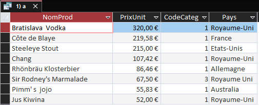
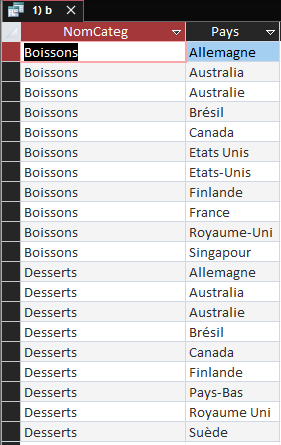
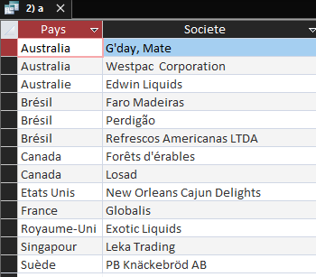
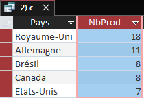
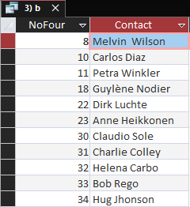
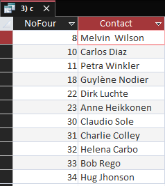
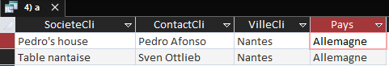
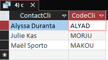

Mission 3 : Exploitation de la base de données KDou
Cette mission consistait à exploiter la base de données KDou avec le langage SQL.
Cette mission consistait à exploiter la base de données KDou avec le langage SQL.
Énoncé : Combien y a-t-il des produits correspondants vendus 50€ ou plus ? On veut les connaître avec leur pays d’origine.
Construction : Cette requête permet de montrer des produits de types boissons et desserts qui valent au dessus de 50 euros et cela peut être interpréter par une demande de produits venant d’une part de la clientèle plutôt aisée .
SELECT DISTINCT p.NomProd, p.PrixUnit, c.CodeCateg, f.Pays FROM Produit AS p, Fournisseur AS f, Categorie AS c WHERE c.CodeCateg = p.CodeCateg AND f.NoFour = p.NoFour AND ( c.CodeCateg =1 OR c.CodeCateg =3) AND p.PrixUnit >=50 ORDER BY p.PrixUnit DESC;
Énoncé : Quels sont les pays de provenance de ces catégories ?
Construction : Cette requête permet de montrer les pays de provenance de ces catégories et donc de montrer les pays les plus exportateurs de ces types de produits . Les noms de certains pays fournisseurs de desserts et de boissons ne sont pas normalisés, entraînant des doublons pour un même pays.
SELECT DISTINCT c.NomCateg, f.Pays FROM Produit AS p, Fournisseur AS f, Categorie AS c WHERE c.CodeCateg = p.CodeCateg AND f.NoFour = p.NoFour AND ( c.CodeCateg =1 OR c.CodeCateg =3);
Énoncé : Donner des informations sur les fournisseurs qui proposent des produits qui ne sont pas commandés actuellement ?
Construction : Voici les fournisseurs qui offrent des produits, mais aucun client n'a passé de commande pour ces articles.
SELECT DISTINCT Fournisseur.Pays, Fournisseur.Societe FROM Fournisseur INNER JOIN (Produit LEFT JOIN DetailCommande ON Produit.RefProd = DetailCommande.RefProd) ON Fournisseur.NoFour = Produit.NoFour WHERE (((DetailCommande.RefProd) Is Null));
Énoncé : Quels sont les pays qui ont une offre importante de produit ?
Construction : Voici la table et la requête SQL associé permettant de voir les pays ayant une offre importante de produit. On a sélectionné les 5 pays avec l’offre la plus importante de produit
SELECT TOP 5 Fournisseur.Pays, Count(Produit.RefProd) AS NbProd FROM Fournisseur INNER JOIN Produit ON Fournisseur.NoFour = Produit.NoFour GROUP BY Fournisseur.Pays ORDER BY Count(Produit.RefProd) DESC;
Énoncé : Quels fournisseurs vendent uniquement des boissons ou des desserts ?
Construction : Voici la table et la requête SQL associé des fournisseurs qui vendent uniquement des boissons et des desserts
SELECT DISTINCT F.NoFour, F.Contact FROM Fournisseur AS F INNER JOIN (Categorie AS C INNER JOIN Produit AS P ON C.CodeCateg = P.CodeCateg) ON F.NoFour = P.NoFour WHERE (((F.NoFour) NOT IN (SELECT P.NoFour FROM Produit P INNER JOIN Categorie C ON P.CodeCateg = C.CodeCateg WHERE C.CodeCateg NOT IN (1, 3) )));
Énoncé : Y en a-t-il qui vendent les deux boissons et desserts ?
Construction : Voici la table ainsi que la requête SQL associé permettant de voir les fournisseurs vendant les boissons et les desserts
SELECT DISTINCT F.NoFour, F.Contact
FROM Fournisseur AS F INNER JOIN Produit AS P
ON F.NoFour = P.NoFour
WHERE (P.CodeCateg IN (1, 3))
AND F.NoFour NOT IN (
SELECT Fournisseur.NoFour
FROM Fournisseur
INNER JOIN Produit ON Fournisseur.NoFour = Produit.NoFour
WHERE Produit.CodeCateg NOT IN (1, 3)
);

Énoncé : Un client nantais Le verre à soi souhaite savoir quels autres clients nantais commandent aussi des produits en Allemagne pour envisager de futures livraisons groupées.
Construction : Les autres clients nantais commandant des produits d'Allemagne sont identifiés, permettant à "Le verre à soi" d'envisager des livraisons groupées. Voici la table et la requête SQL associé
SELECT DISTINCT C.SocieteCli, C.ContactCli, C.VilleCli, F.Pays
FROM Client AS C INNER JOIN (Commande AS CM INNER JOIN
(Fournisseur AS F INNER JOIN (Produit AS P INNER JOIN
DetailCommande AS DC ON
P.RefProd = DC.RefProd) ON F.NoFour = P.NoFour)
ON CM.NoCom = DC.NoCom)
ON C.CodeCli = CM.CodeCli
WHERE ((C.VilleCli LIKE "nant*")
AND (F.Pays LIKE "*allemagne*")
AND (C.SocieteCli NOT LIKE "*verre à soi*"));

Énoncé : Certains clients n’ont jamais eu la remise la plus importante de 25%. Qui sont-ils ?
Construction : Voici la table et la requête SQL associé permettant d’observer les clients qui n’ont jamais pu bénéficier de la remise de 25%
SELECT C.ContactCli, C.CodeCli
FROM Client AS C
WHERE C.CodeCli NOT IN (
SELECT Cmd.CodeCli
FROM Commande Cmd
INNER JOIN DetailCommande DC
ON Cmd.NoCom = DC.NoCom
WHERE DC.Remise = 0.25)
ORDER BY 1;

Objectif : Calculer le montant total des achats de chaque client situé en région parisienne.
Intérêt : Identifier les clients les plus actifs et rentables pour optimiser les actions commerciales.
Objectif : Obtenir le nombre total de commandes passées par chaque client.
Intérêt : Évaluer la fidélité des clients et orienter les stratégies marketing.
Objectif : Identifier les produits qui n'ont jamais été commandés.
Intérêt : Optimiser la gestion des stocks et réduire les coûts d'inventaire.
Objectif : Identifier les produits dont le stock est inférieur à 10 unités.
Intérêt : Éviter les ruptures de stock et optimiser la planification des commandes.
La mission 3 nous a permit de consolider nos connaissances que nous avions de la base de Kdou et du langage SQL de manière générale. Elle nous a également permis de comprendre comment interpreter ses informations dans le cadre d'une entreprise et de sa gestion.